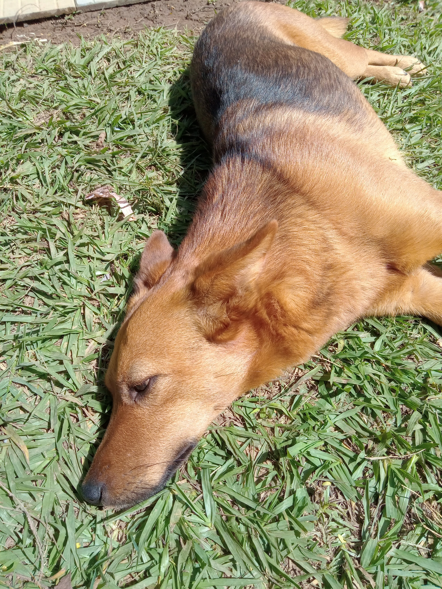

Sobre o autor:

Eu e a Maria Júlia, amorzinho de pessoa, meu amor, a garota que me fez voltar a ser feliz como antes.
Virei programador pelo IF Campus Pouso Alegre e me
apaixonei por isso, acho muito gostoso,
adorei java, C(SIM GOSTEI DE C NATHAN E RAFAEL), phyton(ÓBVIO) e html e javaScript(mas esse vem me dando
dor de cabeça) principalmente nesse site, quero fazer direito na FDSM e na Inatel, uma faculdade que já
ampliou minhas ambições, Engenharia de Software.

Claro que não vou deixar eles de fora, minha família, me ajudaram, investiram em mim, me amam, mesmo com
as brigas e as chatices. O Otávio cabeludo vive no PC no Roblox, mas é foda se arranjar assunto não
param, o Antônio vive atrás do pai, vaqueiro, quer ir para Inconfidentes, minha mãe cuidand de nós até
hoje e meu pai, cuidando da fazendoa e da casa.

Meu pai e minha mãe, que cuidam de mim até hoje

Bolinha:Minha cachorra, ela era filha da Bianca, pouco tempo depois que ela nasceu, Bianca morreu e eu fiquei
com a bolinha.
Bianca agora tá se comportando lá no céu
Lua: Essa é a mais recente, mas já é o porco mais mimado daqui de casa, nunca vi quem conseguisse ganhar
campeonato de roncos dela(dá pra escuatr de qualquer canto da casa ela rocando, parece um trator).
E esse é o Hulk, alguns se recordarem, viram a foto dele no ano passado, naquela tarefa da Manu, dos
bixos, mas um carro atropelou ele quando ele escapou da corrente e realmente, junto com a Bianca, eles
foram os que mais me quebraram.
Agora tão lá no céu correndo livres e latindo a beça, menos o Hulk, ele deve tá dando a pata para alguém
ou tentando abraçar
Esse é meu brother: Joaquim(Quinzinho, mas chamem ele de Jão Jaquim por favor quando virem ele), tamos
juntos dese o pré, meu grande amigo, conheço a família, lutamos juntos e tamos aqui agora tendo dor de
cabeça juntos pelo IF.

Meu outro amigo, esse é o Henricão, conheci aqui no IF, grande parça nos crimes, na hora de xingar o
código que não ta funcionando e na hora de assassinar pessoas, irrelevem essa última parte, grande
amigão.

A turma que me ajudou no trabalho mais recente (A Feira Medieval), galera massa demais, contamos
histórias, vimos dois bêbados e choramos pelas histórias, ah e vimos o Beto quase matar gente só
carregando um tronco.
Lhes apresento a Mandinha, estagiária do 2TI, veio de brinde com a Maria, mas um brinde muito legal,
meiga, inteligente para caramba(não vou falar palavrão citando a manda), muito legals, dançarina,
tentando ajudar todo mundo sempre.

SIM, é o Nathan, quando fez o o papel de Moliére no teatro aqui no campus

Nossa viagem para a Inatel em Santa Rita do Sapucaí
Nossa turminha e a nossa madrinha: a Michelle, professora de Linguagem de Programação, muito legal
Claro que nesses agradecimentos, não poderia faltar a professora da matéria: A Noemi, a dona do html e do
javaScript, com uma aula bem variada e gostosa, que deixa todos nós livres para produzir

Esse, esse, sim, esse. É o Ismael, nosso professor de Redes, não sei porque, mas gosto muito das aulas
dele, desde o ano passadp montando PCs até agora montando roteadores e servidores, aulas muito bacanas
para mim
Vejam senhoras e senhores, que homem, o nosso diretor e professor de Banco de Dados, matéria difícil e
complicada, mas como o mundo não é só mel e eu gosto de difícil, curto a matéria, mas levou um tempinho
para eu pegar
MALUCO:
Vocês todos foram ótimos na minha vida, valeu demais por terem feito parte dela, vocês todos mesmo